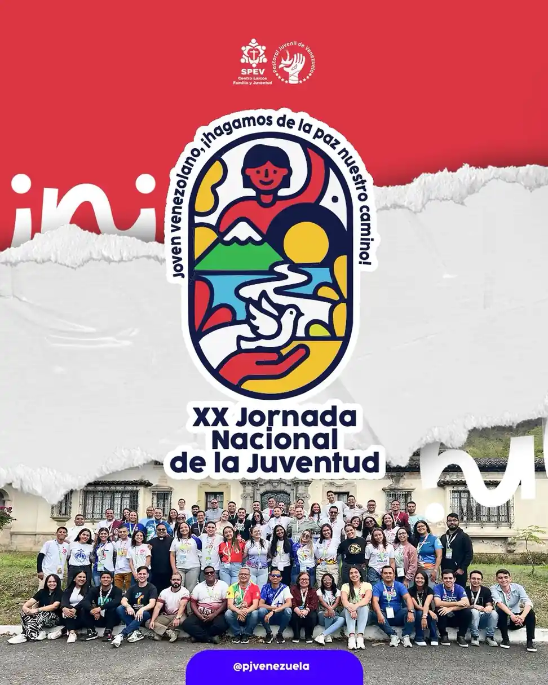
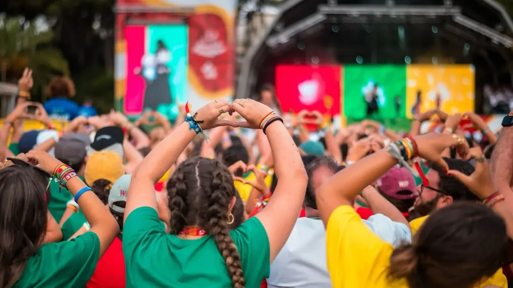

Juventud
Jornada Nacional de la Juventud 2026
La Jornada Nacional de la Juventud 2026 lleva el lema «Hagamos de la paz nuestro camino». La celebración central fue el 15 de febrero de 2026 y las diócesis tuvieron actividades del 7 de febrero al 7 de marzo.

La Jornada 2026
La Conferencia Episcopal Venezolana organiza la Jornada por medio de la Pastoral Juvenil de Venezuela, adscrita al Centro de Laicos, Familia y Juventud. La nota oficial del 13 de febrero de 2026 da el lema completo como «Joven venezolano: hagamos de la paz nuestro camino».
Cada arquidiócesis, diócesis y vicariato la vivió con su propio calendario. La nota cita misas, convivencias, caminatas y actividades deportivas y culturales. La mayoría de las celebraciones fueron el 14 y el 15 de febrero.
Pilares e iniciativas
La nota menciona cuatro pilares: conversión, sinodalidad, paz y reconciliación. La reflexión se apoyó en el mensaje del Papa para la Jornada Mundial de la Paz, «Hacia una paz desarmada y desarmante».
Entre las iniciativas figuran la Mesa de la Sinodalidad, una vigilia de oración, un itinerario de confesión y el foro «Jóvenes Constructores de Puentes».
Qué es la Jornada Nacional de la Juventud
Según el sitio actual del Centro, la Jornada se celebra desde 2007. Su origen está en 2003, cuando el Concilio Plenario de Venezuela aprobó el documento «Jesucristo, buena noticia para los jóvenes». Ese documento fija que se celebre el domingo posterior al 12 de febrero y que ese día se haga una colecta nacional para el desarrollo de la pastoral juvenil.
La normativa de la CEV invita a enviar el 30 % de la colecta a la instancia nacional y destinar el 70 % a los secretariados diocesanos. El sitio actual dice que el documento se aprobó el 31 de julio de 2003 con el 97,4 % de los votos de los 35 obispos presentes.
Y la Jornada Mundial de la Juventud
El sitio actual distingue la Jornada Nacional de la Jornada Mundial de la Juventud (JMJ). La JMJ es un encuentro de jóvenes con el Papa que combina peregrinación, celebración y evangelización. Se celebra cada año en las diócesis y, cada dos, tres o cuatro años, en una edición internacional. El sitio sitúa su origen en Roma, en 1986. Sobre la próxima edición, vea la página de JMJ Seúl 2027.
Materiales
La nota de la CEV indica que hay descargables para la Jornada 2026: guion litúrgico, herramientas para pasar de la palabra a la acción y el documento sobre la paz.
Galería

Multitud de jóvenes con los brazos en alto formando corazones frente a un escenario iluminado.. Crédito: Centro de Laicos, Familia y Juventud, CEV.